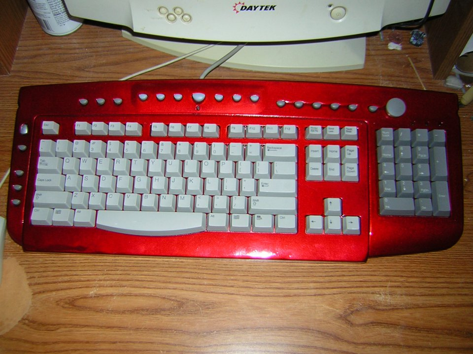

#131057 8 2006-01-09T10:24:51Z Red Matrix My first level I ever played was 20-0 because I was just clicking around... turns out it's simular to a bonus stage.. no enemies.. i thought I was doing good.
So of course, 20-1 was very difficult for me. I reloaded N and then figured out I dind't start on "level 3" but "ep 20-0" ugh!
I restarted from 00-1 and am now stuck on Ep 5-0, Trench Run.
#131060 22 2006-01-09T10:50:51Z Red Matrix 20-0 for first timers.
#131063 25 2006-01-09T10:54:32Z Red Matrix SPACE BAR.
Use it with my left thumb, as if I was typing a space in normal use.
#131075 10 2006-01-09T12:19:27Z Red Matrix Yeah, for me it's the getting back up the right-wall that's giving me probs.
#131083 67 2006-01-09T12:59:46Z Red Matrix Very interesting read. I think I am going to like it here, with all these posts that seem well thought out and much effort placed in their usage.
N)
#131602 13 2006-01-11T07:08:45Z Red Matrix Well, I cheeted and saw a replay from the top ten. I never knew N could jump like that! I always did the small jumps when scalling a wall.
#131604 32 2006-01-11T07:13:32Z Red Matrix I just startd playing v1.4 two days ago. Mines kill me 75% of my deaths so far.
#131616 47 2006-01-11T10:43:52Z Red Matrix What's a LOG OUT link anyways?
#131618 16 2006-01-11T10:48:32Z Red Matrix Finally finished E5 L0 - L3, but Level 4 I can't seem to master. I have been on that level for 3 hours already!
#131754 10 2006-01-11T23:20:06Z Red Matrix I see it as N being on his knee, and he's resting his behind on the bottom of his foot.
#131919 9 2006-01-12T18:49:47Z Red Matrix I can't jump walls that well. I haven't really gotten the timing right... I press a direction before I hit the wall and just fall... and if i press JUMP right after hitting the wall, I can't escape the wall.
It's very frustrating. Is there like a training level? Someone should make a training level(s).
#131920 25 2006-01-12T18:54:16Z Red Matrix Pac-N was very frustrating,, even when i saw the high scores replays.
#132077 16 2006-01-13T12:07:59Z Red Matrix Well, I took a stab at making a map. Now im gonna find out how (and where) to upload it for review.
#6191 1 2006-01-13T12:14:47Z Red Matrix Just can't seem to find the answer to this question! I hope I am not spamming.
#132124 8 2006-01-13T16:14:18Z Red Matrix Well, thanks for replying so soon.
#6193 1 2006-01-13T16:30:04Z Red Matrix Okay, so I made myself a training map to scale walls. Please let me know what you think... hopefully it will be constructive.
Oh, and perhaps play it a little. I can't even 1 life it myself, and i made it!
click

#132328 18 2006-01-14T14:57:45Z Red Matrix Ahem, thanks for the help guys... no need to start an argument over it!

#132396 26 2006-01-14T19:38:18Z Red Matrix Ode to Battlestar Galatica.
 Battlestar Galatica
Battlestar Galatica#132398 20 2006-01-14T19:44:23Z Red Matrix Well, comming from a tech's point of view... I understand the 1's and 0's in computer data.
But then again, when have you heard someone came in 0th to win the Gold? (1st got Silver, 2nd got Bronze..etc)
#132399 744 2006-01-14T19:47:36Z Red Matrix Hi. Please rate my first map. I found it challenging (for a newbie) yet fun!
Click It
Wall Training
PS: I rated SWARM.
.... and Bubble Bath.
#132545 755 2006-01-15T05:34:40Z Red Matrix Aju, I gave your laser map a 4
How come no one's rated mine yet?
#132548 5 2006-01-15T05:48:55Z Red Matrix This really has helped me too... no wonder custom maps are weird sometimes. I should pay attention to that before I rate.
#132549 8 2006-01-15T05:50:24Z Red Matrix "Will somebody sell me their .SOuL?" hehe
#132551 23 2006-01-15T06:02:05Z Red Matrix How about "That 70's Ninja" ?
#6252 1 2006-01-16T20:31:29Z Red Matrix I was just thinking that it would be great if you can toggle a trap door like a multi switch light blub in a long hallway at home. Each end has a switch, either switch toggles the light on/off... so for the trap door... on/off switches.
One switch for on, and the option to include an off switch somewhere else.
What do you think about that?
PS: how about some trap doors that actually stop thwumps' progress!
#132991 3 2006-01-16T20:54:18Z Red Matrix I zoomed in on N and here is the result.
Attachment (lost): post-8-1137444858.gif
#133480 795 2006-01-18T20:57:25Z Red Matrix I've rated a few maps a couple of posts ago... and still need more ratings on my originial sumbission, plus I got some new ones.
Wall Training Needs 3 votes *
 Asteroids - Medium
Asteroids - Medium Needs 4 *
 Butterfly Effect
Butterfly Effect Needs 5 *
 Mario Bros
Mario Bros Needs 5 *
----------
* At the time of this writing
#133486 799 2006-01-18T21:32:46Z Red Matrix Rated: Faulty Compass, Demonic Defence 2, Factory.
Please see my other post above.
")
#133491 10 2006-01-18T21:43:35Z Red Matrix i GOT a demo for the first post...
Since the board is already stretched....
453:35791394|35791394|35791394|2236962|17895696|17895697|17895697|17895697|17895697|17895697|17895697|35651857|35791394|35791394|0|35791394|2236962|16777216|219222289|89478485|107234373|107374182|107374182|107374182|107374182|40265318|35791394|107405858|107374182|107374182|107374182|107374182|107374182|107374182|107374182|115483174|107374182|107374182|35792486|107374306|107374182|107374182|107374182|35792486|107374190|107374182|107374182|107374182|4613734|89510144|89478485|89478485|89478485|89478485|89478485|87381|0|0|0|2236928|0|0|0|0|0
#133692 16 2006-01-19T13:55:51Z Red Matrix WHY ARE british keyboards so different? It's all the same alpha characters.
(sorry for caps lock)
#133693 9 2006-01-19T13:59:48Z Red Matrix Now... seriously... STFU about all the weps they don't belong in N!!111oneone
This actually made me laugh out loud!!!111oneone
Anyhoo, Weapons in N would just add complexity and deviate from the path of N.
(don't get me started on throwing-stars)
#133694 4 2006-01-19T14:04:38Z Red Matrix I don't think you should be able to kill robots, or drones as we call them.
BUT, you can trap them behind sliding doors. The trick is to be in the door so when the "chaser" bot see's you, he can pass through a closed sliding door, but not come back through.
#133709 9 2006-01-19T15:50:20Z Red Matrix Hey, there is some ettiquette involved (and thankfully, not spelling) when asking for help.
- N 1: State all avenues you have tried so that:
. . . . a) we don't waste your time with help that you've already tried... and
. . . . B) we don't waste our time with level 1 support. - N 2: State how much time you have spent doing # 1 above before giving up and asking for help.
. . . . (I like to help those that have demonstrated they know how to use a FAQ and or a Search tool.) - N 3: State why and how this information is needed, for indeed, it could be that you are searching for the wrong solution.
#133711 4 2006-01-19T15:57:40Z Red Matrix Basically, it's the PANIC button when you're not supposed to be playing games (at work..see?)
#133714 6 2006-01-19T16:01:02Z Red Matrix Ah! But you see, he "doesn't have time to search" so we should just come right out and tell him.
sheeit... look at me, I'm pretty new to this thing myself, but I made the time to RTFM and the FAQ and Search. Plus it helps that I'm not a complete moron.
#133717 5 2006-01-19T16:05:46Z Red Matrix Of course, that is, if your keyboard is layed out like that.
Currently you need to press the same KEY that you used to get to the Data Box (that you pasted the level data into in the first place). If it's the [~] key, then press that and then [R] and then [P].
If it's the [\] key, then press that and then [R][P].
If it's the [|] key, etc...
If it's the [`]... and so on.
#133718 11 2006-01-19T16:09:19Z Red Matrix You are to spammy.. try Treat instead.. the other spam meat.
#133719 5 2006-01-19T16:11:28Z Red Matrix Also, don't double post. Please use the

button located just over your post.

#133721 14 2006-01-19T16:16:51Z Red Matrix Okay, so it's crystal clear...
First of all, it's called Flavour and not color.
Second, you get the pink one first, no matter which coloumn you finish first.
Then you get the other colors in a pre determined order.
#134250 7 2006-01-21T06:39:55Z Red Matrix I hate rockets.... but to be on topic... floorguards are kinda cute. THey look like pets!
#134898 146 2006-01-23T02:29:55Z Red Matrix 1. User Episodes
2. Tile shapes (smaller tiles = higher resolution)
3. On/Off trap doors
#134902 3 2006-01-23T02:39:45Z Red Matrix Yeah, some of the N illegals on the net allow you to maximize N and it stretches!
#134921 853 2006-01-23T03:48:21Z Red Matrix Rated Upside...Seekundo...Another Box...
Please rate mine... I like my latest, Skull Dungeon.
� Wall Training Needs 3 votes *
� Asteroids - Medium Needs 3 *
� Butterfly Effect Needs 5 *
� Mario Bros Needs 5 *
 � Skull Dungeon
� Skull Dungeon Needs 5 *
----------
* At the time of this writing
#134923 6 2006-01-23T03:51:44Z Red Matrix Nice Combo!
I think NUMA's help file says why there isn't a Registration link on the page. That's how *I* found out how to do it.

#134928 17 2006-01-23T04:12:42Z Red Matrix I love chasers.. when there's a sliding door around.
#6388 1 2006-01-23T04:17:41Z Red Matrix I have been playing for 2 months now, started with v1.3, and now 1.4.
I still haven't gotten use to the wall jumping.
I seen some unreal demos on NUMA that really make me jealous.
I was wondering if some of the pros could tell me (and others) how they do things.
For instance, jumping off a bounce block after been standing still. (I mean really high)
#134930 6 2006-01-23T04:21:16Z Red Matrix Yeah, i noticed this while making one of my maps (Mario Bros).
#134932 23 2006-01-23T04:27:02Z Red Matrix My keys are layed out like this:

And the reason i didn't del the caps was cuz i was lazy. I type really fast, so my appology took only 2 seconds rather than reaching for the mouse, or they arrow keys and pressing delete for seconds..etc.

#135109 21 2006-01-23T19:17:02Z Red Matrix OMG, i just passed "Plan Plan Plan" it was kinda hard for this new guy. . . until i figured out I had enough room to out run the bottom one.
#135110 19 2006-01-23T19:20:18Z Red Matrix Kids, behave. Tell ya what.. if ya wanna snipe some maps, do mine. hardly any have any votes! LOL
#135452 151 2006-01-24T14:38:11Z Red Matrix Story-boarding. yeah... like an EPIC or something.
Special tile sets. Like... a french curve... trees... like sim-city placment.
#135453 6 2006-01-24T14:40:40Z Red Matrix Any moving object that doesn't kill you perhaps? (Thwumps kill.. bad thwump!)
Or, like, portals like pac-man where you exit one side of the screen and come out the other side. (top / bottom , Left / right )
but gravity-projectiles.. nah.
#135455 7 2006-01-24T14:41:59Z Red Matrix if you maximize, the map doesn't "grow" with it, it just gets centered and the outside of the box is grey.
#135457 6 2006-01-24T14:44:25Z Red Matrix wedgie123 .... Huh?
ebaum's world has a lower version of N. If you get the .SWF file off the source code, you can run that and then maximize. The N box streches/distorts accordingly.. you can even shrink it! AAAAH!!!!!oneoneeleven
#135458 3 2006-01-24T14:45:33Z Red Matrix Mini-mines. lol. that's funny.
Ahem. No. I have a hard enough times with the mines the way they are, tyvm.
#135459 5 2006-01-24T14:47:36Z Red Matrix After about 10 seconds I could decipher your post,
The N Men. How about using some punctuation next time!
What's the deal with you and razor wire? I say on/off trap doors are a good idea... yeah, back me up on that one sir!
#136081 12 2006-01-26T14:00:20Z Red Matrix Noogle is fine... n00ble is not.